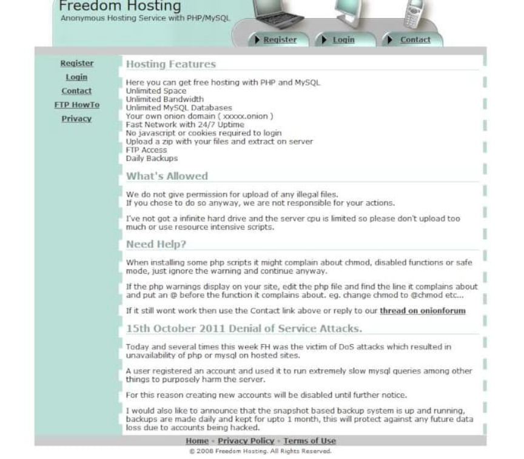
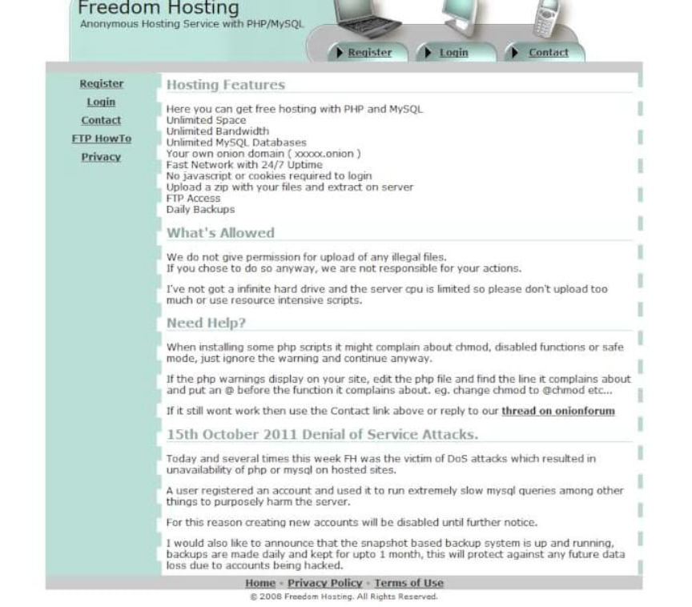

Freedom Hosting Admin Sentenced to 27 Years in Prison
The administrator of the darkweb hosting service Freedom Hosting was sentenced to 27 years in prison.
U.S. District Judge Theodore D. Chuang sentenced Eric Eoin Marques, age 36, of Dublin, Ireland, to 27 years in prison followed by lifetime supervision. Marques, the creator of the darkweb hosting service Freedom Hosting, pleaded guilty to conspiracy to advertise child pornography.

Marques established Freedom Hosting in 2008 as a free hosting service for onion services. Before the Federal Bureau of Investigation’s seizure of the service in 2013, at least half of the onion services in operation used Freedom Hosting. Traditionally, in the United States, providers of electronic services are not directly responsible for user-created content. Freedom Hosting, publicly at least, pretended not to have any involvement in the operation or use of onion services created by Freedom Hosting users. In reality, Marques directly assisted certain services in their day-to-day operation. He specifically assisted services that facilitated the distribution of content depicting child abuse.
During the investigation, the FBI learned that Freedom Hosting provided hosting for more than 200 child exploitation sites. The sites contained millions of pictures and videos. Almost two million files involved victims that law enforcement had identified in previous investigations.

Administrators of child abuse forums revealed Marques’ role in their operation.
On April 24, 2013, a user of Website A posted a message asking whether the anonymous hosting service (AHS) is free to the end-user. On April 25, 2013, the administrator of Website A responded that the AHS is “100% free” and that the administrator assumes that “the admin covers [the cost] himself as a·service to the [Network] pedo community.”
Website A, in this instance, is a reference to one of the largest child exploitation forums at the time. In a similar thread, users of the forum talked about Marques’ additional involvement:
On May 31, 2013, the administrator of Website A replied to a user that claimed, “[AHS] has NO control of the sites it hosts. It only hosts them.” The administrator responded, stating, “In reality [AHS] has full control over all the websites hosted on their servers. Just a few days ago they patched a few of the core files running this very forum.” Later in the same conversation, the administrator noted that, though AHS does not “create or maintain ( as far as I know) any of the sites they are hosting” AHS could “do whatever they wanted with the sites they host as they inherently have full access to the databases behind the sites.”
The FBI first took control of the Freedom Hosting servers in July 2013 but lost control after Marques regained access by changing passwords. On July 29, authorities in Ireland arrested Marques on an international arrest warrant. The FBI once again took control of the Freedom Hosting servers. Shortly after Marques’ arrest, every onion service hosted by Freedom Hosting displayed a “Down for Maintenance.” Many of the sites had nothing to do with the spread of child abuse content, including Tor Mail and the Hidden Wiki. The maintenance page contained a hidden iframe that contained javascript code. The code exploited a memory management vulnerability in Firefox 17 ESR. The Tor Browser Bundle, at the time, was based on the vulnerable version of Firefox (and shipped with NoScript disabled by default).
[img=] [/img]
Inside the code was a Windows executable (Magneto) that reported a computer’s real I.P. address, MAC address, and Windows hostname to a server in Virginia with the I.P. address 65.222.202.54. So, the malware effectively identified the visitors of sites hosted by Freedom Hosting who were using the Tor Browser on Windows and with javascript enabled.
[img=]The javascript variable “Magneto” contained the Windows executable.[/img]
There are many interesting breakdowns of the malware available online as well as the potential impact of the FBI’s NIT deployment.
U.S. District Judge Theodore D. Chuang sentenced Eric Eoin Marques, age 36, of Dublin, Ireland, to 27 years in prison followed by lifetime supervision. Marques, the creator of the darkweb hosting service Freedom Hosting, pleaded guilty to conspiracy to advertise child pornography.
Marques leaving a High Court in Dublin after an extradition hearing
Marques established Freedom Hosting in 2008 as a free hosting service for onion services. Before the Federal Bureau of Investigation’s seizure of the service in 2013, at least half of the onion services in operation used Freedom Hosting. Traditionally, in the United States, providers of electronic services are not directly responsible for user-created content. Freedom Hosting, publicly at least, pretended not to have any involvement in the operation or use of onion services created by Freedom Hosting users. In reality, Marques directly assisted certain services in their day-to-day operation. He specifically assisted services that facilitated the distribution of content depicting child abuse.
During the investigation, the FBI learned that Freedom Hosting provided hosting for more than 200 child exploitation sites. The sites contained millions of pictures and videos. Almost two million files involved victims that law enforcement had identified in previous investigations.

Freedom Hosting, publicly, seemed no different than other small hosting services.
Administrators of child abuse forums revealed Marques’ role in their operation.
On April 24, 2013, a user of Website A posted a message asking whether the anonymous hosting service (AHS) is free to the end-user. On April 25, 2013, the administrator of Website A responded that the AHS is “100% free” and that the administrator assumes that “the admin covers [the cost] himself as a·service to the [Network] pedo community.”
Website A, in this instance, is a reference to one of the largest child exploitation forums at the time. In a similar thread, users of the forum talked about Marques’ additional involvement:
On May 31, 2013, the administrator of Website A replied to a user that claimed, “[AHS] has NO control of the sites it hosts. It only hosts them.” The administrator responded, stating, “In reality [AHS] has full control over all the websites hosted on their servers. Just a few days ago they patched a few of the core files running this very forum.” Later in the same conversation, the administrator noted that, though AHS does not “create or maintain ( as far as I know) any of the sites they are hosting” AHS could “do whatever they wanted with the sites they host as they inherently have full access to the databases behind the sites.”
The FBI first took control of the Freedom Hosting servers in July 2013 but lost control after Marques regained access by changing passwords. On July 29, authorities in Ireland arrested Marques on an international arrest warrant. The FBI once again took control of the Freedom Hosting servers. Shortly after Marques’ arrest, every onion service hosted by Freedom Hosting displayed a “Down for Maintenance.” Many of the sites had nothing to do with the spread of child abuse content, including Tor Mail and the Hidden Wiki. The maintenance page contained a hidden iframe that contained javascript code. The code exploited a memory management vulnerability in Firefox 17 ESR. The Tor Browser Bundle, at the time, was based on the vulnerable version of Firefox (and shipped with NoScript disabled by default).
[img=] [/img]
Inside the code was a Windows executable (Magneto) that reported a computer’s real I.P. address, MAC address, and Windows hostname to a server in Virginia with the I.P. address 65.222.202.54. So, the malware effectively identified the visitors of sites hosted by Freedom Hosting who were using the Tor Browser on Windows and with javascript enabled.
[img=]The javascript variable “Magneto” contained the Windows executable.[/img]
There are many interesting breakdowns of the malware available online as well as the potential impact of the FBI’s NIT deployment.